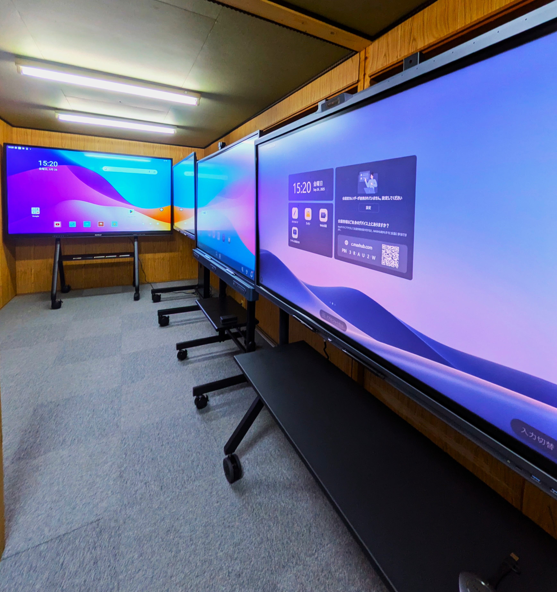

ご利用ガイド
GUIDE
Kokuban BASEとは

教育機関の電子黒板導入を支援する、
電子黒板選定の総合窓口です。
「どの電子黒板を選べばいいのか」「授業で本当に使いこなせるのか」「導入後のサポートは受けられるのか」。電子黒板の導入には、製品選びだけでは解決できない不安があります。
Kokuban BASEは、学校・学習塾など教育機関の電子黒板導入を、製品比較、見積もり、設置、購入後の活用支援まで一貫してサポートします。教育現場に合った一台を、一緒に考える電子黒板販売の総合窓口です。
ご利用の流れ
-
STEP 1
まずはお問い合わせ
フォームまたはお電話で、検討状況やお困りごとをお聞かせください。「何から始めればいいか分からない」という段階のご相談でも問題ありません。

-
STEP 2
オンライン相談・ヒアリング
授業の形式、教室の広さ、ご予算、重視したい機能などをオンラインでうかがい、御校に合った進め方を一緒に整理します。
-
STEP 3
製品のご提案・お見積もり
6社10製品以上の中から、教育現場に合う候補機種を比較してご提案します。複数ブランドの相見積もりにも対応します。
-
STEP 4
実機体験・ショールーム見学
関西ショールームやオンラインデモ、デモ機の無償レンタルを通じて、書き心地や見え方を導入前にご確認いただけます。

-
STEP 5
ご契約・設置・導入後サポート
ご契約後は設置・初期設定までサポート。導入後も操作研修や活用のご相談で、現場で使いこなせる状態まで伴走します。

CONTACT
まずはお気軽にお問い合わせください
電子黒板の比較・お見積もり・導入後の活用まで、教育機関専門のスタッフが無料で承ります。